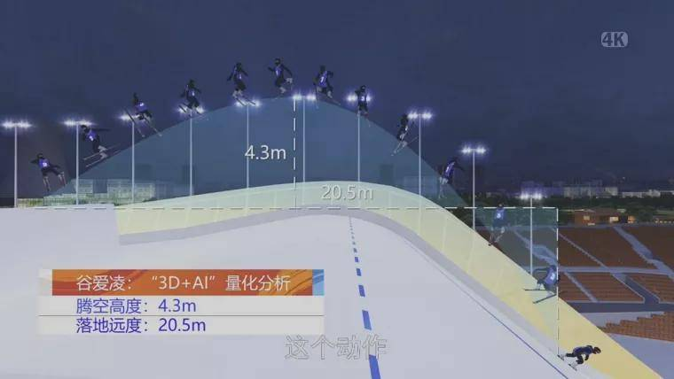

“3D+AI”量化分析“时间切片” 3秒瞬间一帧呈现
在高空滑雪这项“空中飞人”运动，你是否有一丝困惑：滑雪运动的评判标准究竟是怎样的？裁判如何看清冠、亚军之间的细微差别？
相信您一定对这个“时间切片”有深刻的印象，如果用文字形容，时间切片就是把运动员从跳台上起飞一直到落地的过程展现在一帧画面上。这到底是 怎么做到的？
“通过‘3D+AI’技术，打造首钢滑雪大跳台打造了1∶1的3D模型，观众可以通过3D场景漫游的形式实现沉浸式观赛。通过此项技术手段对运动员动作 进行量 化分析，将滑行速度、腾空高度、落地远度、旋转角度等一系列运动数据与原始画面叠加起来。这解决了高速度、高难度动作还原的难题。 技术呈现的画面 再配合专业解说的技术分解，观众可以更直观地从流畅性、完成度、难度、多样性和美观度等角度看懂选手之间的技术差异，轻松 看懂冠亚军之争。
北京冬奥曝光的保密项目“中国AI教练”
在北京冬奥会自由式滑雪女子空中技巧项目比赛中，中国运动员、冬奥会“四朝元老”徐梦桃以一个近乎完美的动作为中国再添一金，实现了中国自由 式滑雪空中技巧队十六年的金牌梦。而徐梦桃夺金的背后，有名虚虚拟教练“观君”。
“观君”依托领先的计算机视觉及完整框架技术，首创了“小样本、大任务”的冰雪运动分析模型（Xiaoice CV Analysis Model for Winter Sports），针对运动员每一跳，“观君”都会做出专业判断，与国际裁判计分准则保持高度一致，严格判别扣分动作，并对起跳、空中、落地三个阶 段的全流程动作进行量化，支持运动轨迹、身体姿态、出台角度、高远度等多维度指标分析，给教练员提供指导依据。
元宇宙加持，大跳台和冷却塔才能这么搭
北京2022年冬奥会自由式滑雪女子大跳台资格赛2月7日在北京首钢滑雪大跳台举行，首钢滑雪大跳台正式进入冬奥会比赛时间。平顺细腻的场地条件 、工业遗存风格的酷炫赛场背景，让众多中外选手盛赞“这条赛道是全球最好的赛道之一”。
首钢滑雪大跳台设计师张利讲解首钢冬奥园区设计中应用的虚拟现实技术，通过虚拟现实技术将大跳台的设计方案放入整个改造环境中亲身体会，通过 虚拟现实技术带来的真实体验，提前打磨设计细节，让大跳台和冷却塔及周围环境完美融搭。
冬奥“智慧餐厅”，机器人自动炒菜做饭、调酒、空中传菜！
各国冬奥代表团加上媒体工作人员达到万人的规模，同时解决这么多人吃饭问题，还要尽可能满足多样化的选择，可不是一件容易的事。于是打造了智 能餐厅，各种“厨房机器人”一起上阵。
除了地道中国菜，机器人大厨还可以制作汉堡、披萨、鸡尾酒、冰淇淋、咖啡等多种类型食物。起锅、炒制、调味、装盘等环节自动完成，用料比例和 烹煮时间都有严格的限制，不少用餐的消费者表示机器人大厨水平不亚于人工厨师。
智能多媒体
开幕式大家被惊艳了吗？黄河之水天上来，生成冰立方，然后雕刻出晶莹剔透的冰雪五环。三维舞美直接把大气磅礴的视觉效果拉满，而这些都是依赖 于8K屏幕，3D显示及机器视觉AI技术实现的。